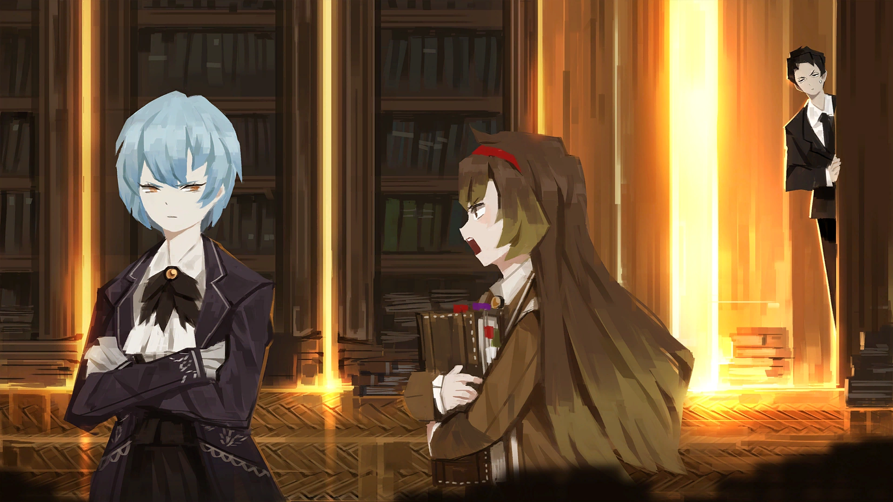

The Stories
Main Story
The main plot of the game follows Roland and Angela trying to each accomplish their own goals by creating "The One, Perfect Book". As players progress through the story, they come to learn more about the different associations, syndicates, and coorporations of the City work, as well as its harsh reality. The citizens know that they city can be dreadful to live in, but there's much more hidden in the shadows that make their only home miserable. As the library grows throughout the story, its threat level is upgraded to show just how much of an impact its making in the city. Every main story fight has episodes before and after the fight begins. The before episode provides background information on the guests, and the post-battle episode provides commentry between Roland and Angela. Players will fight their way up to the ranks from the unknown canard to an impuritas civitatis, where the most elite of fixer's and associations would dare to step foot. In the City, everyone has their own motives, especially someone like Roland or Angela... Click here to view a list of the library's guests, where you can read their stories. *WARNING: POTENTIAL SPOILERS*.
Patron Librarian Stories
The ten patron librarians all have their own stories to share. As you progress through the main story of the game, you will unlock new episodes for each of the ten floors. These episodes will help the player learn more about the patron librarian of a given floor, and get a better understanding of their feelings towards Angela. Each episode comes with an abnormality battle, and players must supress the abnormality to see their stories. Most floors, excluding Binah and Hokma's floors, have four abnormality battles. Other small stories between the patron librarians can be viewed as every floor is leveled up. These small stories contain the different librarians interacting with each other.
